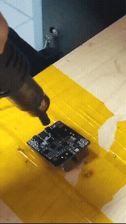

Experiencia Laboral
Mi trayectoria combina el dominio técnico de campo (electrónica, seguridad electrónica, redes e impresión 3D) con una fuerte capacidad organizativa: diseño de flujos de trabajo, reforma de procesos, capacitación de equipos y creación de herramientas digitales asistidas por IA.
Historial Profesional y Logros Clave
Responsable tanto de la resolución técnica avanzada en laboratorio y soporte como de la estructuración organizacional, mejora continua de procesos y desarrollo de herramientas internas:
Estructuración y estandarización de flujos de trabajo operativos para diagnóstico, garantías, atención al cliente y escalamiento técnico multinivel.
Detección de cuellos de botella y formulación de sugerencias estratégicas en la reforma de procesos internos para agilizar tiempos de respuesta y orden en taller.
Formación técnica y operativa continua a compañeros de trabajo, nuevo personal e integradores en tecnologías Hikvision, ZKTeco, Ubiquiti y MikroTik.
Identificación de áreas de oportunidad y desarrollo proactivo de herramientas digitales para optimizar el flujo de trabajo, destacando la aplicación NEXTIME Pro.
• Investigación e integración multimarca de sistemas de seguridad electrónica (CCTV, Control de Acceso, Intercom, Redes).
• Mantenimiento preventivo, diagnóstico electrónico y reparación correctiva (Hardware/Software).
• Mantenimiento integral de infraestructura tecnológica, redes, proyectores y estaciones de trabajo.
• Creación y despliegue de herramientas a medida como StockFlow Pro + (App Android de inventario escolar en tiempo real).
• Gestión de plataformas digitales, soporte remoto y producción de contenido multimedia institucional.
• Investigación e implementación de herramientas de integración basadas en software libre.
• Soporte técnico integral, optimización de sistemas operativos y reparación de equipos de cómputo.
• Creación de material promocional, documentación de usuario y capacitación técnica.

¿Qué aporto a tu organización?
Combino la capacidad resolutiva de un técnico de laboratorio con la visión estructurada de un optimizador de procesos: